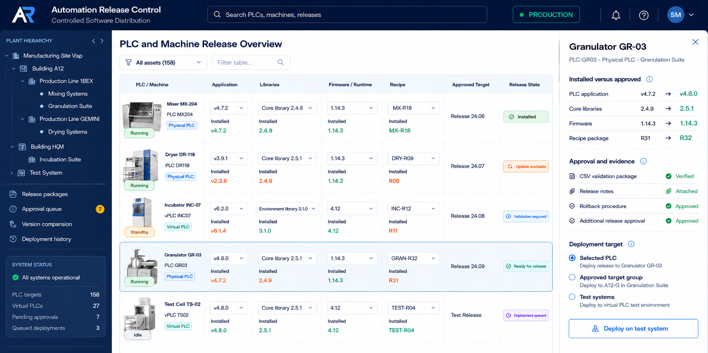

Automation Release Control
Built in 2024, the system gave teams one controlled process to approve software, deploy it across 150+ PLC targets, and confirm which version was running on each device.
- Angular
- C# / ASP.NET
- Git
- GMP / CSV
- GAMP 5
- IQ / OQ
- SSH deployment
- OPC UA
- MQTT
- Release management
- PLC systems
01
Executive Summary
The Automation Release Control system is a version-control and deployment system for factory automation software. From one interface, users can release, update, or roll back PLC applications and software libraries on remote devices across the factory, without repeating each step manually at every PLC. After deployment, each device reports its installed version to the same interface, allowing the team to verify that the correct version is running.
The previous process provided inconsistent version visibility and required repetitive, expert-led rollout steps. I combined an Angular operations interface, C#/ASP.NET services, Git-versioned software, GMP qualification evidence, controlled SSH distribution, and OPC UA/MQTT feedback. The resulting workflow supported more than 150 physical and virtual PLC targets, target computers, and several automation artefact types.
02
Context
In a regulated manufacturing environment, each automation release had to connect one approved version to its targets, qualification evidence, approval, deployment method, recovery path, and actual installed result. The release was complete only when those links remained traceable.
The scope included PLC applications, reusable libraries, firmware and runtime versions, recipes, and supporting software packages across physical PLCs, virtual PLCs, and computers. Because these artefacts affected production equipment, the workflow had to serve engineering, operations, release governance, and validation without separating evidence from execution.
03
Problem
As a result, teams could not answer one operational question from a single record: Which approved software version is installed on this device right now?
Version ambiguity
Approved source, packaged release, intended target, and actual device state could drift apart.
Manual rollout
Each change repeated operational steps and relied on specialist knowledge to reach the correct targets.
Scattered evidence
Qualification evidence, approvals, release notes, and rollback instructions lived in separate places.
Open-loop delivery
Delivery did not prove success. The process required device-reported version and runtime confirmation.
04
Solution
Each record connected versioned software, target systems, validation evidence, approval state, deployment status, recovery information, and reported installed state. This changed the release from a collection of files and handoffs into one traceable workflow.

UI recreation based on the system I designed and built. It shows version comparison, release evidence, and controlled deployment. Operational data is fictionalized, and employer identifiers are removed. Select the image for full resolution.
The host selects an approved Git commit, and the client checks out that commit as the deployed version. OPC UA or MQTT then returns machine and runtime state through the host API to the Angular ViewModel, closing the release loop.
Modelled
Release domain
Versions, targets, evidence, distribution status, recovery readiness, and installed state.
Built
Operational workflow
Angular MVVM frontend, C#/ASP.NET services, records, evidence links, and automated delivery.
Operationalized
Fleet-scale release
Host-to-client Git deployment over SSH with OPC UA/MQTT feedback across 150+ targets.
05
My Involvement
This was not a handoff or a one-off deployment script. As the 0-to-1 builder and system owner, I defined the workflow, implemented the platform, produced qualification evidence, and supported its use in the manufacturing environment.
I created the initial concept and pitch, captured user requirements, and tied the design to risk assessment and regulated release needs.
I defined versions, targets, evidence, deployment state, installed state, and recovery information as one release domain.
I implemented the Angular operations interface, C#/ASP.NET services, and the release and evidence workflows around them.
I built the SSH delivery path for approved software across PLC and computer targets and multiple release artefact types.
I integrated OPC UA/MQTT version and runtime feedback so installed device state returned to the dashboard.
I prepared IQ/OQ evidence, release records, and rollback-ready documentation, then owned the operating workflow.
Lifecycle delivered
- Prototype + pitch
- Requirements + risk
- Functional design
- Implementation + Git
- Review + approval
- Controlled deployment
- State verification
- IQ/OQ evidence
06
Outcome + Bottom-Line Impact
One controlled workflow could prepare, approve, distribute, verify, and recover automation releases across a heterogeneous fleet of more than 150 targets.
Controlled software distribution across physical and virtual PLC targets.
Software delivery that previously took about an hour could be completed in a few controlled clicks, with device feedback confirming the result. Specialists could focus on release decisions and exceptions.
Linked version, evidence, approval, target, deployment, rollback, and installed state.
Device-reported state exposed the rollout result instead of treating delivery as proof of success.